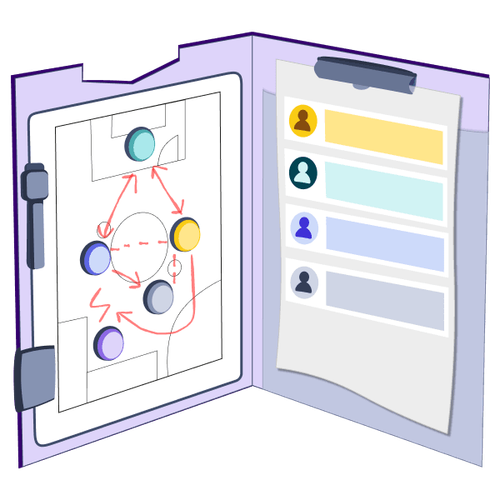

Mit der Academy erhaltet ihr im Business-Plan praxisnahe Lernmodule rund um Facilitation und wirksame Transformation.
Gemeinsam mit 9 Spaces zeigt Plan International Deutschland, wie wertebasiertes Arbeiten Orientierung gibt – nach innen wie nach außen.

Eine Aufstellungsübung, die die Unterschiede in Persönlichkeiten sichtbar und besprechbar macht
Dieses Tool hilft euch dabei, Eigenschaften, die ihr unbewusst ablehnt, aufzudecken und im Team damit umzugehen.
Ein Warm-up-Spiel, mit dem sich auch große Gruppen schnell kennenlernen
Mit der Team-Edition des Manual to Me könnt ihr wichtige Infos über euer Team mit anderen teilen und so die Zusammenarbeit verbessern.